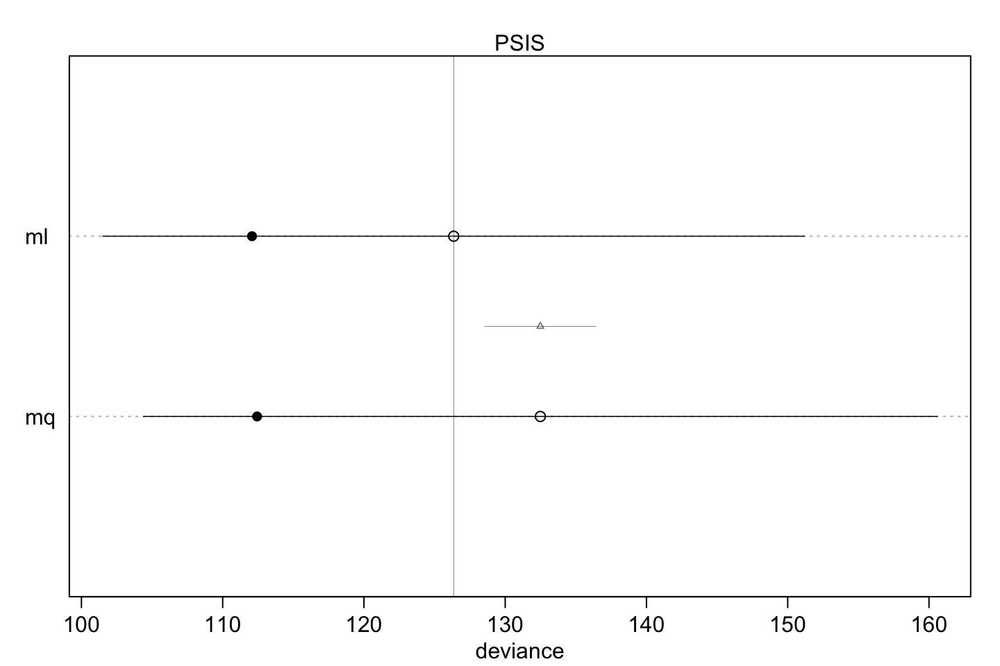
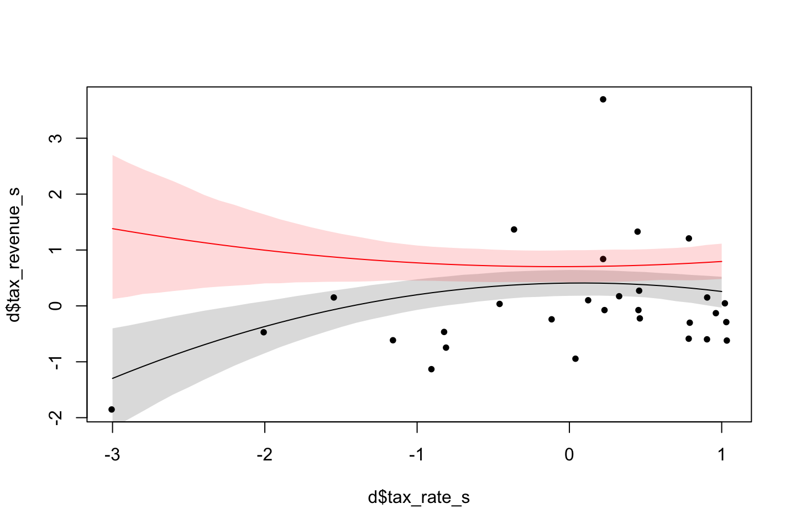

9 Chapter 8 - Model comparison
Introduction, using the case of the planes coming back with holes in the wings, does that mean that one should make the wings stronger? A model will suggest that, because it only sees scenarios of where the holes are in planes that came back, hence it is conditional on planes returning, we rarely see holes in the center part. Since we only see planes coming back, we dont get to see the other condition.
The following sections elaborate on how we can model interactions, meaning how one outcome may result another.
9.1 Building an interaction
This section elaborates on what an interaction can be used at what for.
library(rethinking)
data(rugged)
d <- rugged
# make log version of outcome
d$log_gdp <- log( d$rgdppc_2000 )
# extract countries with GDP data
dd <- d[ complete.cases(d$rgdppc_2000) , ]
# rescale variables
dd$log_gdp_std <- dd$log_gdp / mean(dd$log_gdp)
dd$rugged_std <- dd$rugged / max(dd$rugged)#8.2
m8.1 <- quap(
alist(
log_gdp_std ~ dnorm( mu , sigma ) ,
mu <- a + b*( rugged_std - 0.215 ) ,
a ~ dnorm( 1 , 1 ) ,
b ~ dnorm( 0 , 1 ) ,
sigma ~ dexp( 1 )
) , data=dd )
#8.3
set.seed(7)
prior <- extract.prior( m8.1 )
# set up the plot dimensions
plot( NULL , xlim=c(0,1) , ylim=c(0.5,1.5) ,
xlab="ruggedness" , ylab="log GDP" )
abline( h=min(dd$log_gdp_std) , lty=2 )
abline( h=max(dd$log_gdp_std) , lty=2 )
# draw 50 lines from the prior
rugged_seq <- seq( from=-0.1 , to=1.1 , length.out=30 )
mu <- link( m8.1 , post=prior , data=data.frame(rugged_std=rugged_seq) )
for ( i in 1:50 ) lines( rugged_seq , mu[i,] , col=col.alpha("black",0.3) )
sum( abs(prior$b) > 0.6 ) / length(prior$b)## [1] 0.545m8.1 <- quap(
alist(
log_gdp_std ~ dnorm( mu , sigma ) ,
mu <- a + b*( rugged_std - 0.215 ) ,
a ~ dnorm( 1 , 0.1 ) ,
b ~ dnorm( 0 , 0.3 ) ,
sigma ~ dexp(1)
) , data=dd )9.1.1 Adding an indicator variable isn’t enough.
One may argue that indicator variables may be sufficient to reflect certain situations, e.g., if something is on Africa or not, hence an indicator (i.e., dummy variable) may be included in the model. Although that will just reflect the mean value of that given outcome as it is either in or out.
#8.7
# make variable to index Africa (1) or not (2)
dd$cid <- ifelse( dd$cont_africa==1 , 1 , 2 )
#8.8
m8.2 <- quap(
alist(
log_gdp_std ~ dnorm( mu , sigma ) ,
mu <- a[cid] + b*( rugged_std - 0.215 ) ,
a[cid] ~ dnorm( 1 , 0.1 ) ,
b ~ dnorm( 0 , 0.3 ) ,
sigma ~ dexp( 1 )
) , data=dd )
#8.9
compare( m8.1 , m8.2 )
|
|
|
|
|
|
#8.10
precis( m8.2 , depth=2 )
|
|
|
|
#8.11
post <- extract.samples(m8.2)
diff_a1_a2 <- post$a[,1] - post$a[,2]
PI( diff_a1_a2 )## 5% 94%
## -0.1990056 -0.1378378
#8.12
rugged.seq <- seq( from=-0.1 , to=1.1 , length.out=30 )
# compute mu over samples, fixing cid=2
mu.NotAfrica <- link( m8.2 ,
data=data.frame( cid=2 , rugged_std=rugged.seq ) )
# compute mu over samples, fixing cid=1
mu.Africa <- link( m8.2 ,
data=data.frame( cid=1 , rugged_std=rugged.seq ) )
# summarize to means and intervals
mu.NotAfrica_mu <- apply( mu.NotAfrica , 2 , mean )
mu.NotAfrica_ci <- apply( mu.NotAfrica , 2 , PI , prob=0.97 )
mu.Africa_mu <- apply( mu.Africa , 2 , mean )
mu.Africa_ci <- apply( mu.Africa , 2 , PI , prob=0.97 )plot(dd$log_gdp,dd$rugged,ylim = c(0.7,1.4))
grid()
lines(mu.NotAfrica_mu,col = "black")
lines(mu.Africa_mu,col = "blue")
Thus we see that it is far better including an index instead of a dummy variable!!!
9.2 Symmetry of interactions
About the index approach.
9.3 Continuous interactions
9.3.1 A Winter Flower
This is an example with a flower that depends on sun and water to make photosynthesis, although having only one of the two is not useful at all, hence we need to deal with this using an interaction.
This is the data:
library(rethinking)
data(tulips)
d <- tulips
str(d)## 'data.frame': 27 obs. of 4 variables:
## $ bed : Factor w/ 3 levels "a","b","c": 1 1 1 1 1 1 1 1 1 2 ...
## $ water : int 1 1 1 2 2 2 3 3 3 1 ...
## $ shade : int 1 2 3 1 2 3 1 2 3 1 ...
## $ blooms: num 0 0 111 183.5 59.2 ...9.3.2 The models
We are going to center W (water) and S (shade).
d$blooms_std <- d$blooms / max(d$blooms)
d$water_cent <- d$water - mean(d$water)
d$shade_cent <- d$shade - mean(d$shade)We have the non centered model:

We set the priors to (we correct the sd in the following):

Alpha = 0.5 means that when shade and sun is at its mean, the model expects blooms to be halfway to the observed maximum.
We see that the slopes (betas) for W and S is 0, meaning that we have no idea if there is going to be relatively more shade or water, hence it will just be centered at 0.
But what does the standard deviation of 1 imply?
We see that the blooming should not go below 0 and above 1. Lets us inspect the alpha parameter and what the prior expects to see.
a <- rnorm(n = 1e4 ,mean = 0.5 ,sd = 1)
#Intercept alpha less than 0 and higher than 1
sum( a < 0 | a > 1 ) / length( a )## [1] 0.6189It implies that the priors assign most of the probability outside of the range of 0 to 1. Hence we try to constrain the priors a bit:
a <- rnorm(n = 1e4,mean = 0.5,sd = 0.25)
sum( a < 0 | a > 1 ) / length( a )## [1] 0.0443Now we see that only 5% is less than 0 and higher than 1. That is much better. Notice that we want to allow the model to reach the edges and probably go a bit above / below so we can fit data within this region.
Regarding the beta values we see that the
bw <- rnorm(n = 1e4,mean = 0,sd = 1)
dens(bw,main = "bw prior")
We also see that
bw <- rnorm(n = 1e4,mean = 0,sd = 0.25)
dens(bw,main = "bw prior")
Now we see that the PI for 95% is between -0.5 and 0.5.
PI(samples = bw,0.95)## 3% 98%
## -0.4858059 0.4828205In general the goal of the priors in this example is to set priors with weak information but also constrain the model from overfitting.
The is how the model looks when finalized:
#Non interaction model!
m8.4 <- quap(
alist(
blooms_std ~ dnorm( mu , sigma ) ,
mu <- a + bw*water_cent + bs*shade_cent ,
a ~ dnorm( 0.5 , 0.25 ) ,
bw ~ dnorm( 0 , 0.25 ) ,
bs ~ dnorm( 0 , 0.25 ) ,
sigma ~ dexp( 1 )
)
,data=d )
precis(m8.4)
|
|
|
|
Building the interaction model
The model now look like this:
#With interaction
m8.5 <- quap(
alist(
blooms_std ~ dnorm( mu , sigma ) ,
mu <- a + bw*water_cent + bs*shade_cent + bws*water_cent*shade_cent ,
a ~ dnorm( 0.5 , 0.25 ) ,
bw ~ dnorm( 0 , 0.25 ) ,
bs ~ dnorm( 0 , 0.25 ) ,
bws ~ dnorm( 0 , 0.25 ) ,
sigma ~ dexp( 1 )
)
,data = d)9.3.3 Plotting posterior predictions
To do this, we must:
- Draw samples from
#Plotting the non interaction model
par(mfrow=c(2,3)) # 3 plots in 1 row
models <- list(m8.4,m8.5)
for(m in models){
for(s in -1:1) {
#Create index of observations given the shade level
idx <- which(d$shade_cent==s) #We have three levels -1, 0 and 1.
#Plot each water levels given the shade level
plot(d$water_cent[idx]
,d$blooms_std[idx]
,xlim=c(-1,1),ylim=c(0,1)
,xlab="water",ylab="blooms"
,pch=16,col=rangi2
)
#Draw samples
mu <- link(m #Non interaction model
,data = data.frame(shade_cent=s,water_cent=-1:1))
#Plotting 20 posterior lines
for(i in 1:20)
lines(x = -1:1,y = mu[i,]
,col=col.alpha("black",0.3))
}
}
Figure 9.1: Top row = no interaction model, bottum row = innteraction model.
9.3.4 Plotting prior predictions
Now we are going to extract priors to plot these.
set.seed(7)
prior <- extract.prior(m8.5)#Plotting the non interaction model
par(mfrow=c(2,3)) # 3 plots in 1 row
models <- list(m8.4,m8.5)
for(m in models){
for(s in -1:1) {
#Create index of observations given the shade level
idx <- which(d$shade_cent==s) #We have three levels -1, 0 and 1.
#Plot each water levels given the shade level
plot(d$water_cent[idx]
,d$blooms_std[idx]
,xlim=c(-1,1),ylim=c(-0.5,1.5)
,xlab="water",ylab="blooms"
,pch=16,col=rangi2
)
abline(h = c(0,1),lty = 2,col = "grey")
#Draw samples
mu <- link(m #Non interaction model
,data = data.frame(shade_cent=s,water_cent=-1:1)
,post = prior)
#Plotting 20 prior lines
for(i in 1:20)
lines(x = -1:1,y = mu[i,]
,col=col.alpha("black",0.3))
}
}Figure 9.2: Top row = no interaction model, bottum row = innteraction model.
We see that the priors both for the interaction and no interaction model is typically within the limits, so that is good.
We can say that the priors are:
Harmless
Weakly realistic
The priors include non or very low bias to positive or negative effects as most things can happen, although the priors tend to be in a reasonable range, hence we are doing better then a flat prior, but we do not include much information either.
9.4 Exercises
9.4.1 8M4
Repeat the tulips analysis, but this time use priors that constrain the effect of water to be positive and the effect of shade to be negative. Use prior predictive simulation. What do these prior assumptions mean for the interaction prior, if anything?
Notes:
Need to be changed, so the prior distribution is higher than 0 and less than 0, thus the distribution of the two distributions must be on each side of 0.
We can do this by manipulating the mean or the standard deviation of the dsitruibutions.
There are two difficulties with this:
- You can end up having an unrealistic mean. To avoid that, you can manipulate the standard deviation, although that may make too much certainty
- Also a normal distribution will never be strictly within some region, as it never touches 0.
Thus we can use an exponential distribution, although that only has one tail. Thus we can make a log normal distribution instead.
The model is from code chunk 8.24 - m8.5.
#Loading data
library(rethinking)
data("tulips")
d <- tulips
#' water and shade variables are three levels, ordered after amount of water/shade.
#' Cluster of plants in the same section of the greenhouse.
#' Blooms = the outcome variable which we have to predict.
#Transforming the data
d$blooms_std <- d$blooms / max(d$blooms)
d$water_cent <- d$water - mean(d$water)
d$shade_cent <- d$shade - mean(d$shade)9.4.1.1 Interaction model
Model specification
#The model
m <- quap(
alist(
blooms_std ~ dnorm(mu,sigma),
mu <- a + bw * water_cent - bs * shade_cent + bws * water_cent * shade_cent, #Notice there is minus bs
a ~ dnorm(0.5,0.25),
bw ~ dlnorm(0,0.25),
bs ~ dlnorm(0,0.25),
bws ~ dlnorm(0,0.25),
sigma ~ dexp(1)
)
,data = d
)
precis(m)
|
|
|
|
We see that the more shade, the less blooms and the more water the more blooms. Although the combination of water and shade will lead to less blooms, I guess because the plant will be drowning in water.
Prior predictive simulation
par(mfrow = c(1,1))
simulations <- 20
prior <- extract.prior(m)
for (s in -1:1) {
idx <- which(d$shade_cent == s)
plot(x = d$water_cent[idx]
,y = d$blooms[idx]
,xlim = c(-1,1), ylim = c(-0.5,1.5)
,xlab = "water"
,ylab = "blooms"
,pch = 16
,col = rangi2
,main = paste("Priors predictive simulation, S = ",s)
)
abline(h = c(0,1),lty = 2)
#Call link function to make predictions
mu <- link(fit = m
,data = data.frame(shade_cent = s, water_cent = -1:1)
,post = prior #posterior is just the prior, hence we introduce no data
)
for (i in 1:simulations) {
lines(-1:1
,mu[i,]
,col = col.alpha("black",0.3)
)
}
}
We see that we are going to regularize the priors even more, to make better priors.
#The model
m <- quap(
alist(
blooms_std ~ dnorm(mu,sigma),
mu <- a + bw * water_cent - bs * shade_cent + bws * water_cent * shade_cent, #Notice there is minus bs
a ~ dnorm(0.5,0.25),
bw ~ dlnorm(-2,0.25), #Set mean to -2
bs ~ dlnorm(-2,0.25), #Set mean to -2
bws ~ dlnorm(-2,0.25), #Set mean to -2
sigma ~ dexp(1)
)
,data = d
)
simulations <- 20
prior <- extract.prior(m)
for (s in -1:1) {
idx <- which(d$shade_cent == s)
plot(x = d$water_cent[idx]
,y = d$blooms[idx]
,xlim = c(-1,1), ylim = c(-0.5,1.5)
,xlab = "water"
,ylab = "blooms"
,pch = 16
,col = rangi2
,main = paste("Priors predictive simulation, S = ",s)
)
abline(h = c(0,1),lty = 2)
#Call link function to make predictions
mu <- link(fit = m
,data = data.frame(shade_cent = s, water_cent = -1:1)
,post = prior #posterior is just the prior, hence we introduce no data
)
for (i in 1:simulations) {
lines(-1:1
,mu[i,]
,col = col.alpha("black",0.3)
)
}
}


9.4.1.2 Conclusion
We see that the regularized priors are more realistic.
Never plot the priors with the actual data points, that is just done for practical reasons.